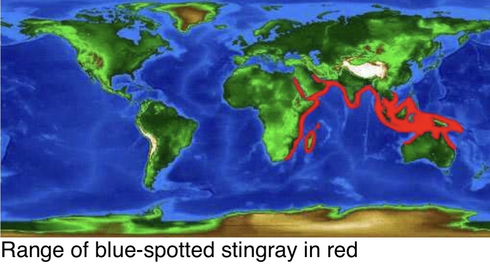
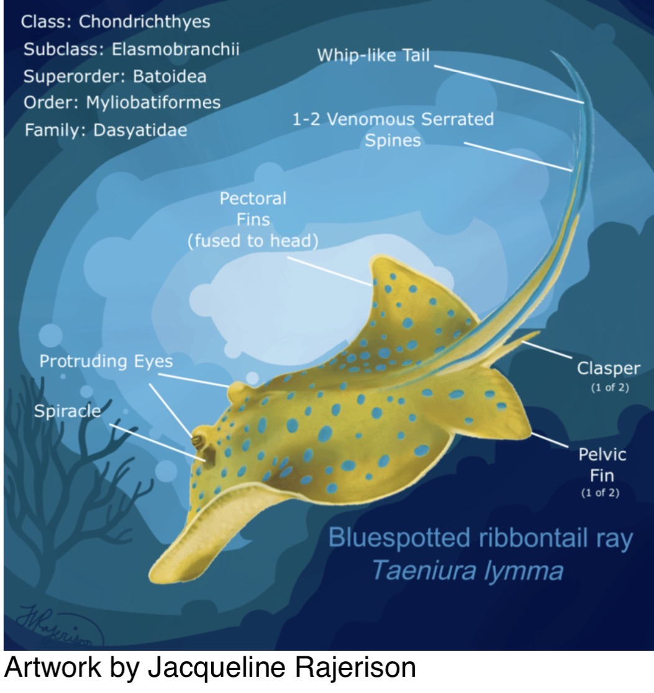
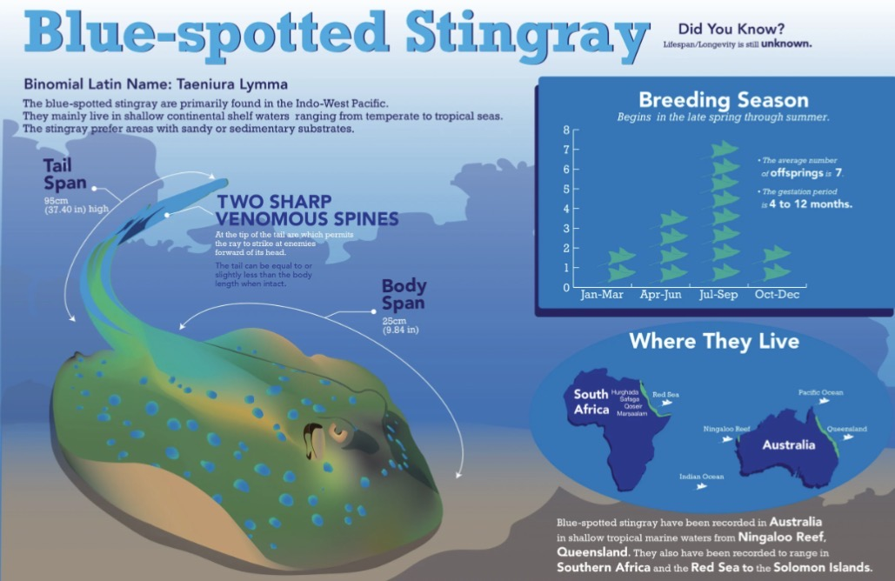
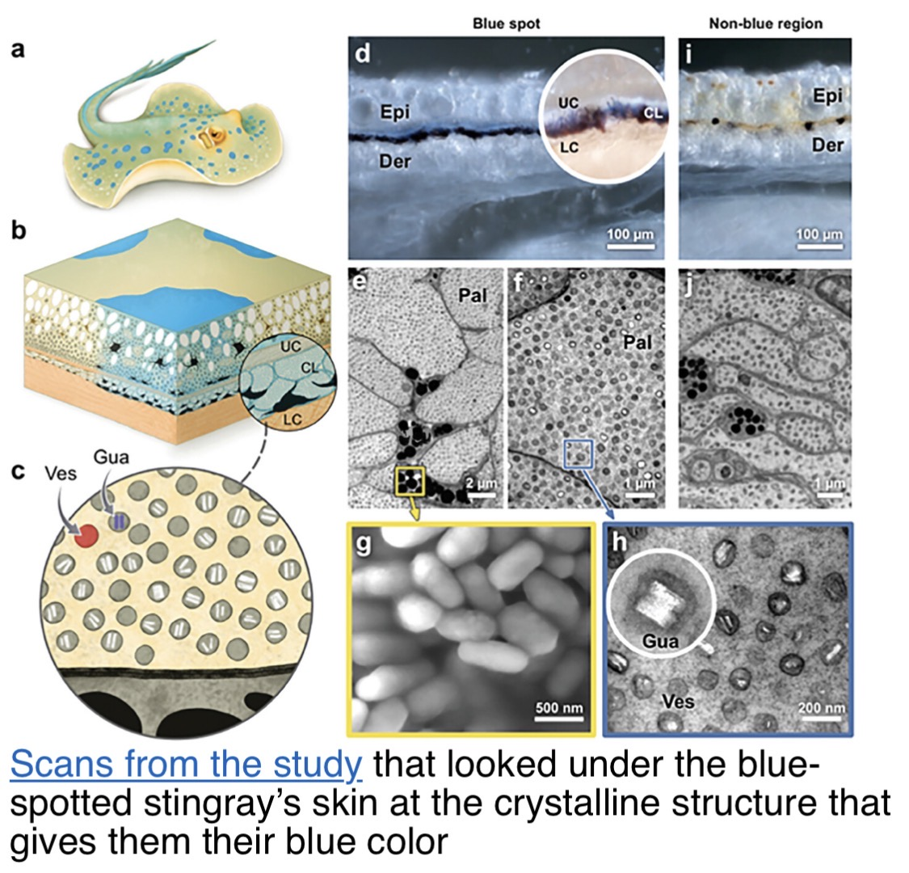

Permanent species reference derived from the October 1–7, 2026 Naturalist shift update. Illustrations from the original shift update.
Identification and range
Also known as bluespotted lagoon ray. Bright blue spots mark a yellow-green disc, and a whip-like tail bears venomous serrated spines. Reported disc width 12–14 in, total length up to 28 in. Indo-Pacific and coastal Indian Ocean, typically shallow water to 66 ft.
Habitat and behavior
Adults are associated with coral reefs, resting beneath ledges or in caves by day and foraging at night in reef and sand habitats. Juveniles use sheltered shallow habitats such as seagrass beds and mangroves. Cleaner wrasses may remove parasites.
Diet and sensory adaptations
Crustaceans, mollusks and polychaete worms are located with sensitive ampullae of Lorenzini. Crushing dental plates process hard-shelled prey; spiracles assist breathing while resting.
Reproduction
Males have paired claspers. Females give birth to live young, typically reported as 2–7 pups; the source describes variable gestation of 4–12 months. Spot patterns can help distinguish individuals.
Why the spots look blue
The striking blue is structural rather than a conventional blue pigment: nanoscale structures beneath the skin reflect blue light, while deeper pigmented layers absorb other wavelengths. The source references microscopic studies of the skin.
Conservation and visitor interpretation
The shift update lists the species as Least Concern and lifespan as unknown. Do not touch the ray or its venomous tail spines. Some proposed functions of its blue spots, such as warning coloration, remain hypotheses.
Further reading
www.calacademy.org/explore-science/bluespotted-ribbontail-ray ↗
www.floridamuseum.ufl.edu/discover-fish/species-profiles/bluespotted-ribbontail-ray/ ↗
animaldiversity.org/accounts/Taeniura_lymma/ ↗
advanced.onlinelibrary.wiley.com/doi/10.1002/adom.202301909 ↗
Source illustrations



